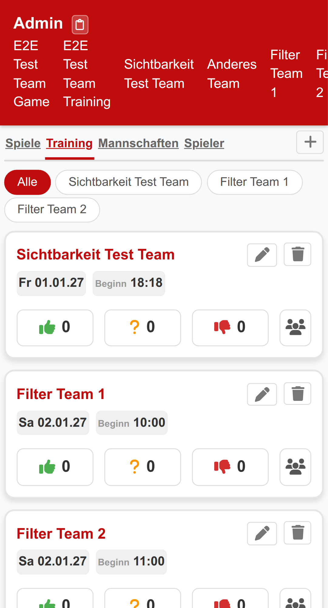
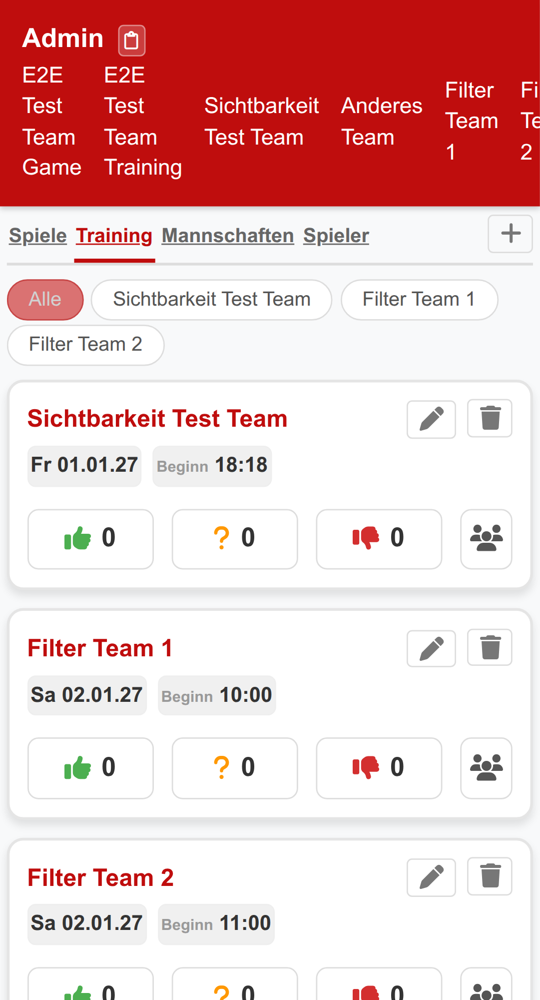
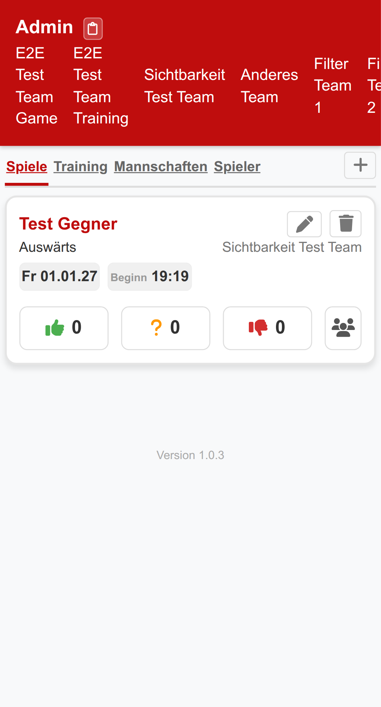
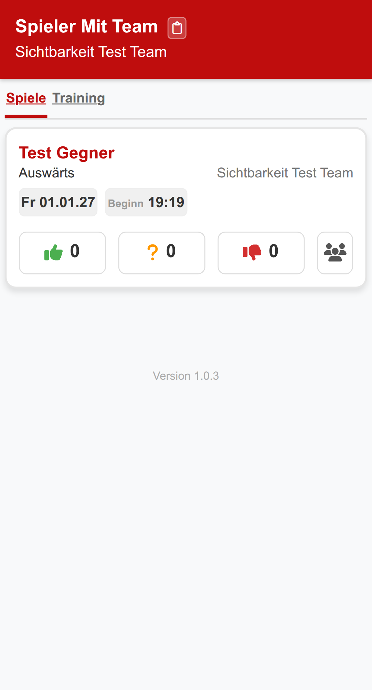
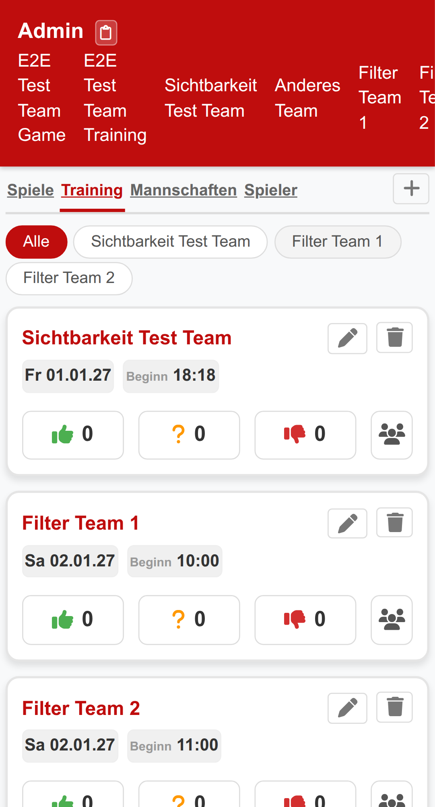
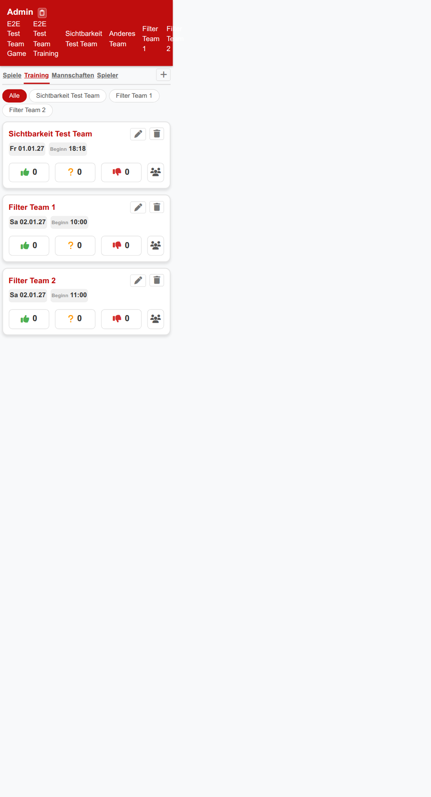
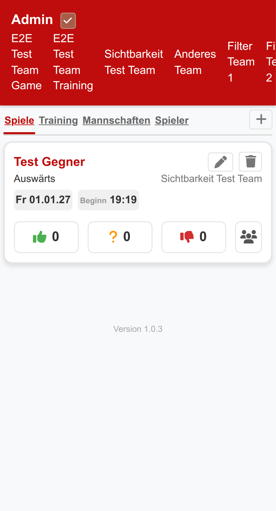
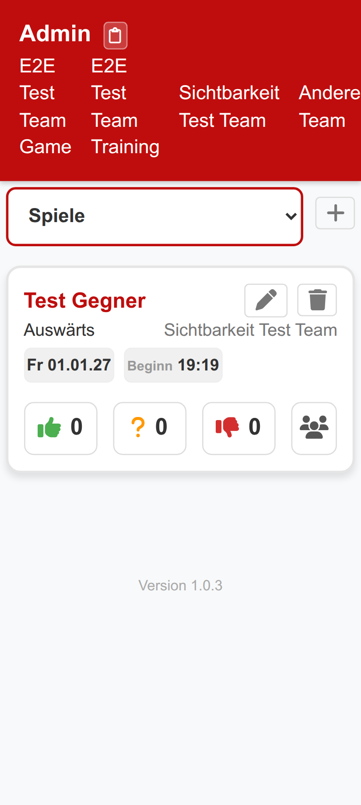

Training
Die Trainingsübersicht zeigt alle anstehenden Trainingstermine deiner Mannschaften an. Hier siehst du auf einen Blick, wann das nächste Training stattfindet und wie viele Spieler bereits zu- oder abgesagt haben.

Aufbau eines Trainingseintrags
Jeder Trainingseintrag zeigt folgende Informationen:
- Mannschaftsname – Für welches Team das Training stattfindet (z. B. „Sichtbarkeit Test Team")
- Datum und Uhrzeit – Wann das Training beginnt (z. B. „Fr 01.01.27, Beginn 18:18")
- Abstimmungsbuttons – Drei Buttons zum Abstimmen: 👍 Zusage, ❓ Vielleicht, 👎 Absage
- Teilnehmer-Icon 👥 – Zeigt die Übersicht aller Abstimmungen
Mannschaftsfilter
Wenn du in mehreren Mannschaften spielst, kannst du die Trainingsanzeige nach Teams filtern. Über die Filter-Buttons oberhalb der Trainingsliste wählst du aus, welche Mannschaften angezeigt werden sollen. Der Button „Alle" zeigt die Trainings aller Mannschaften an.

Admin-Funktionen
Als Trainer oder Administrator siehst du zusätzlich bei jedem Training:
- Bearbeiten-Button (Stift-Icon) – Training bearbeiten
- Löschen-Button (Mülleimer-Icon) – Training löschen
- Plus-Button (+) – Neues Training hinzufügen (oben rechts neben der Navigation)
Spiele
Die Spieleübersicht zeigt alle anstehenden Spiele deiner Mannschaften. Hier findest du alle wichtigen Informationen zu jedem Spiel auf einen Blick.

Aufbau eines Spieleintrags
Jedes Spiel zeigt folgende Informationen:
- Gegner – Name des gegnerischen Teams (z. B. „Test Gegner")
- Heim/Auswärts – Ob das Spiel zu Hause oder auswärts stattfindet
- Mannschaft – Welches deiner Teams spielt
- Datum und Uhrzeit – Wann das Spiel beginnt
- Abstimmungsbuttons – Gleiche Abstimmungsmöglichkeiten wie beim Training: 👍 Zusage, ❓ Vielleicht, 👎 Absage
- Teilnehmer-Icon 👥 – Übersicht aller Abstimmungen
Admin-Funktionen
Als Administrator stehen dir auch bei Spielen die Bearbeiten- und Löschen-Buttons zur Verfügung, sowie der Plus-Button zum Erstellen neuer Spiele.

Abstimmen
Mit der Abstimmungsfunktion kannst du für jedes Training und jedes Spiel angeben, ob du teilnehmen kannst. So weiß dein Trainer immer, mit wie vielen Spielern er planen kann.

So stimmst du ab
Bei jedem Termin findest du drei Abstimmungsbuttons:
- Tippe auf 👍 Zusage, wenn du sicher teilnehmen kannst.
- Tippe auf ❓ Vielleicht, wenn du dir noch nicht sicher bist.
- Tippe auf 👎 Absage, wenn du nicht teilnehmen kannst.
Die Zahl neben jedem Button zeigt an, wie viele Spieler bereits so abgestimmt haben.
Abstimmung bei Trainingsserien
Wenn ein Training als Serie angelegt wurde (z. B. wöchentliches Training), kannst du für jeden einzelnen Termin separat abstimmen. So kannst du flexibel angeben, an welchen Terminen du dabei bist.

Teilnehmerübersicht
Über das Teilnehmer-Icon 👥 kannst du sehen, welche Spieler bereits abgestimmt haben und wie sie abgestimmt haben. Das ist besonders nützlich für Trainer, um die Mannschaftsaufstellung zu planen.
Training erstellen
Als Trainer oder Administrator kannst du neue Trainingstermine für deine Mannschaft anlegen. Diese Funktion ist nur für berechtigte Benutzer sichtbar.
So erstellst du ein Training
- Navigiere zum Tab „Training" über die Navigation oder das Dropdown-Menü.
- Tippe auf den Plus-Button (+) rechts neben der Navigation.
- Es öffnet sich ein Formular, in dem du folgende Angaben machst:
- Mannschaft – Wähle die Mannschaft aus
- Datum – Wähle das Trainingsdatum
- Uhrzeit – Gib die Startzeit ein
- Serie – Optional: Erstelle eine wiederkehrende Trainingsserie
- Bestätige die Eingabe, um das Training zu speichern.
Trainingsserien
Du kannst Trainings als Serie anlegen, z. B. für wöchentlich wiederkehrende Termine. Dabei werden automatisch mehrere Trainingstermine erstellt, für die die Spieler einzeln abstimmen können.
Training bearbeiten oder löschen
Bestehende Trainings kannst du über die Icons im Trainingseintrag bearbeiten oder löschen:
- Stift-Icon – Öffnet das Bearbeitungsformular
- Mülleimer-Icon – Löscht das Training (nach Bestätigung)
Spiel erstellen
Als Trainer oder Administrator kannst du neue Spiele für deine Mannschaft anlegen. So können sich die Spieler frühzeitig für anstehende Spiele an- oder abmelden.
So erstellst du ein Spiel
- Navigiere zum Tab „Spiele" über die Navigation oder das Dropdown-Menü.
- Tippe auf den Plus-Button (+) rechts neben der Navigation.
- Es öffnet sich ein Formular, in dem du folgende Angaben machst:
- Gegner – Name des gegnerischen Teams
- Mannschaft – Wähle deine Mannschaft aus
- Heim/Auswärts – Wo findet das Spiel statt?
- Datum – Wähle das Spieldatum
- Uhrzeit – Gib die Anstoßzeit ein
- Bestätige die Eingabe, um das Spiel zu speichern.
Spiel bearbeiten oder löschen
Bestehende Spiele kannst du über die Icons im Spieleintrag bearbeiten oder löschen:
- Stift-Icon – Öffnet das Bearbeitungsformular
- Mülleimer-Icon – Löscht das Spiel (nach Bestätigung)
Link kopieren
Mit der Funktion „Link kopieren" kannst du deinen persönlichen Login-Link in die Zwischenablage kopieren. Diesen Link kannst du dann z. B. als Lesezeichen speichern oder an einem sicheren Ort aufbewahren, um dich schnell wieder einzuloggen.

So kopierst du deinen Login-Link
- Schaue in den Header-Bereich (roter Bereich oben) – dort siehst du deinen Spielernamen.
- Tippe auf das Clipboard-Icon (📋) neben deinem Namen.
- Der Login-Link wird in deine Zwischenablage kopiert.
- Als Bestätigung verwandelt sich das Icon kurzzeitig in ein Häkchen (✓).
Wozu dient der Login-Link?
Dein persönlicher Login-Link ist dein Zugang zu TeamControl. Mit diesem Link kannst du dich ohne Passwort einloggen. Du kannst ihn nutzen, um:
- Ein Lesezeichen in deinem Browser zu erstellen
- Den Link auf deinem Homescreen zu speichern
- Dich auf einem anderen Gerät einzuloggen
